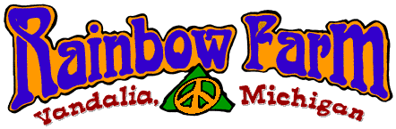

Our Purpose
Rainbow Farm supports the medical, spiritual,
and responsible recreational
uses of Marijuana for a more sane and compassionate America. We
also encourage
the vast agricultural and industrial uses of the natural
substance Cannabis
Hemp as an environmentally safe alternative to thousands of
synthetic products
now being mass consumed in this country at a tremendous cost to
our environment.
Above all we support FREEDOM in America. We have seen the erosion
of our
precious civil liberties over the past 60 years as a direct
result of Cannabis
prohibition and the governments War on Drugs. We consider this a
war on US and
we are fighting back with large assemblies of people with similar
views at our
two annual hemp festivals HEMP AID and RoachRoast. We believe it
is our DUTY
as citizens of a FREE country to be vigilant in the protection of
our sacred civil liberties.
We educate and inform people about the beneficial and responsible
uses of
Cannabis and we register voters to gain the power at the polls to
put
politicians into office who support our freedoms and the reform
of Marijuana
laws. We've become active in the political process in this
country and we
encourage all responsible citizens to do the same. Proceeds from
HEMP AID and
RoachRoast are used to support many groups, agencies and
individuals who are
active in the support of our civil liberties. We feel the time
has come and
the momentum is here to put an end to prohibition forever. We
believe that the
general populace of this country has become smart enough to
understand that our
tax dollars would be better spent and our society as a whole
would be better served
by providing treatment for people with drug problems instead of
imprisonment.
We call on all responsible citizens to do their part in bringing
an end to
prohibition in America and an end to the Drug War that has
imprisoned and
killed thousands of innocent Americans over the past decades. We
want you to
look at this website carefully and go to all the links we provide
for you here
so you can learn more about how important your support is now. We
encourage
you to attend our festivals and excercise your freedom and civil
liberty and
join us in raising our voices against intollerance in this
country. HEMP AID and
RoachRoast are a great way to have fun and support a worthy cause
at the same time.
Rainbow Farm DOES NOT promote the use of illicit drugs by anyone,
nor do we
condone or encourage the use of tobacco, alchohol, or marijuana
by minors. We
do not encourage breaking laws. We work hard to change attitudes
and bad laws
from within the system of government currently in place. We
support that
system of government and we feel priviledged to live in America.
To contact us:
Call the Rainbow Farm Hotline at:
(616) 476-2808
Send snail mail to:
Rainbow
Farm
59896 Pemberton Road
Vandalia, MI 49095
Email us at:
info@rainbowfarmcampground.com
© Copyright 1999, Rainbow Farm, All rights reserved.